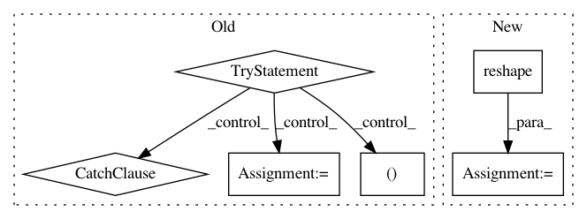

981e4266d4ea816b08a762193bd52f40cd1a3242,examples/mnist/keras/mnist_inference.py,,inference,#Any#Any#Any#,26
Before Change
output_file = tf.gfile.GFile("{}/part-{:05d}".format(args.output, worker_num), mode="w")
while True:
try:
// get images and labels from tf.data.Dataset
img, lbl = sess.run(["inf_image:0", "inf_image:1"])
// inference by feeding these images and labels into the input tensors
// you can view the exported model signatures via:
// saved_model_cli show --dir <export_dir> --all
// note that we feed directly into the graph tensors (bypassing the exported signatures)
// these tensors will be shown in the "name" field of the signature definitions
outputs = sess.run(["dense_2/Softmax:0"], feed_dict={"Placeholder:0": img})
for p in outputs[0]:
output_file.write("{}\n".format(np.argmax(p)))
except tf.errors.OutOfRangeError:
break
output_file.close()
if __name__ == "__main__":
After Change
for batch in ds:
predictions = predict(conv2d_input=batch[0])
labels = np.reshape(batch[1], -1).astype(np.int)
preds = np.argmax(predictions["dense_1"], axis=1)
for x in zip(labels, preds):
output_file.write("{} {}\n".format(x[0], x[1]))
output_file.close()
if __name__ == "__main__":
In pattern: SUPERPATTERN
Frequency: 3
Non-data size: 6
Instances
Project Name: yahoo/TensorFlowOnSpark
Commit Name: 981e4266d4ea816b08a762193bd52f40cd1a3242
Time: 2019-08-07
Author: leewyang@verizonmedia.com
File Name: examples/mnist/keras/mnist_inference.py
Class Name:
Method Name: inference
Project Name: tensorflow/cleverhans
Commit Name: 68fe96add85bd842df23569dde490e1694d256fe
Time: 2019-06-21
Author: siarheisiniak@yahoo.com
File Name: cleverhans/model_zoo/deep_k_nearest_neighbors/dknn.py
Class Name: DkNNModel
Method Name: find_train_knns
Project Name: scipy/scipy
Commit Name: 83c8b3a4f321c4a924d344df275ddc403d3ca835
Time: 2015-11-24
Author: lkelley@cfa.harvard.edu
File Name: scipy/stats/_binned_statistic.py
Class Name:
Method Name: binned_statistic_dd